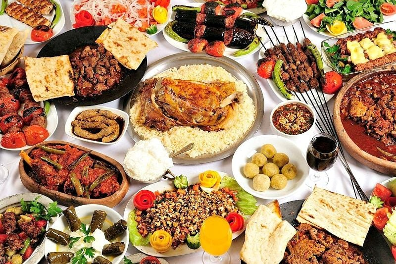

Hoş Geldiniz Lezzet Dostları!
Sıcak bir merhaba! "Yemek Hazinesi" web sayfamıza hoş geldiniz. Burası, mutfakta hayal gücünüzü serbest bırakabileceğiniz, lezzet dolu bir yolculuğa çıkacağınız bir yer.
Her bir tarif, özenle seçilmiş malzemeler ve bir tutam sevgi ile hazırlanmıştır. Bizim için yemek pişirmek sadece bir zorunluluk değil, aynı zamanda bir sanattır. Bu platformda, damak tadınıza uygun birçok lezzet bulacak ve belki de yepyeni favori tarifler keşfedeceksiniz.
Mutfak, bir araya gelmenin, paylaşmanın ve sevdiklerimizle anılar biriktirmenin bir mekanıdır. Yemek yapma tutkusunu paylaşan bu topluluk içinde, sizleri de aramızda görmekten mutluluk duyarız. Sormak istediğiniz bir şey varsa veya denemek istediğiniz özel bir tarif varsa, bize her zaman ulaşabilirsiniz.
Yemek Hazinesi ailesine katıldığınız için teşekkür ederiz. Birlikte, her bir çatal dolusu sevinci ve lezzeti paylaşalım!
Afiyet olsun!